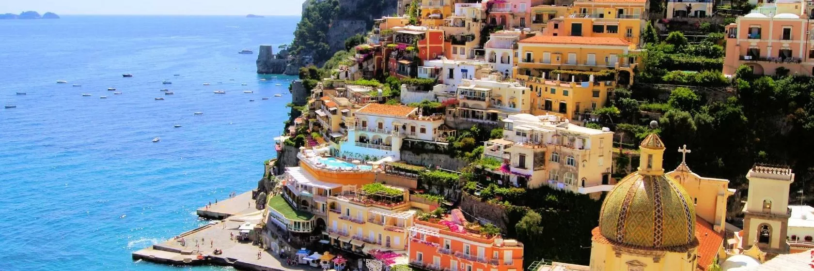
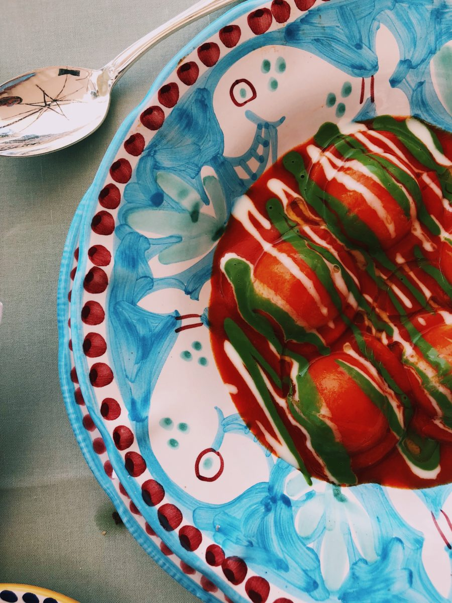
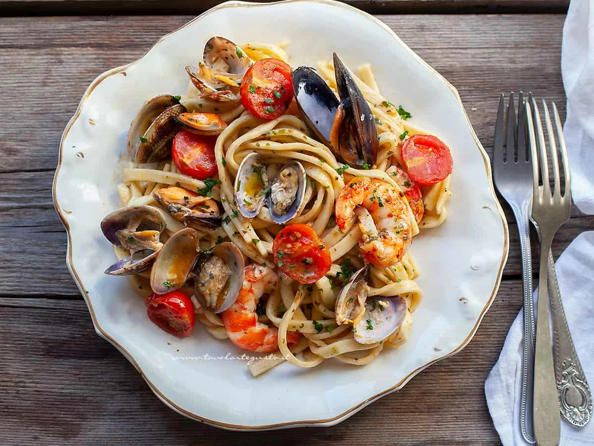
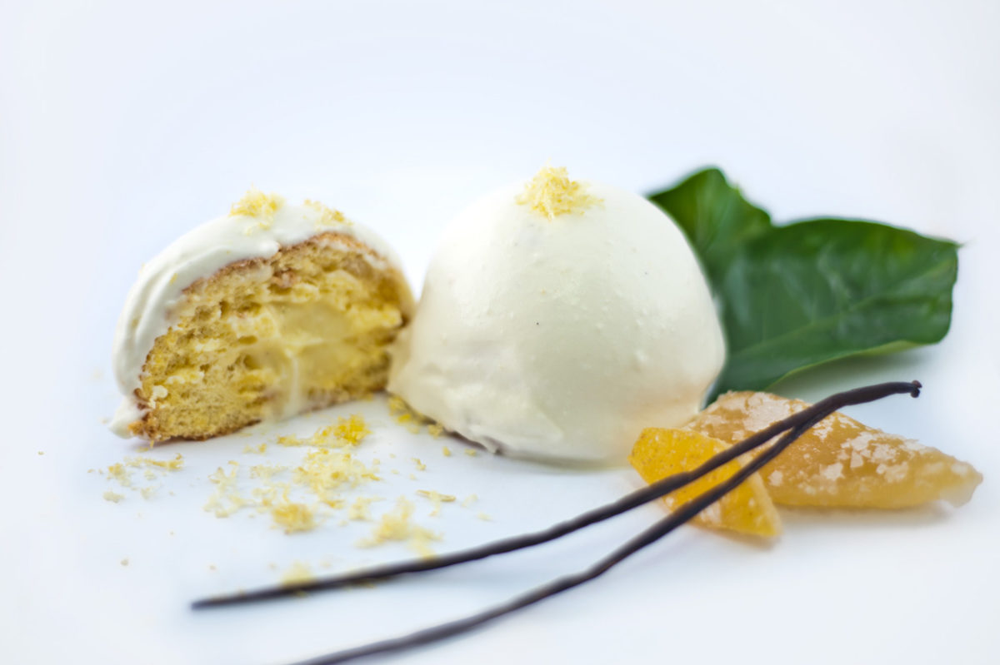
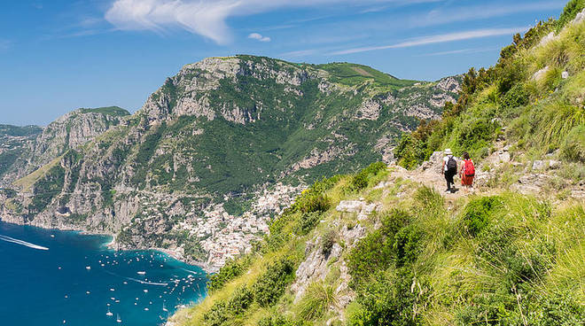
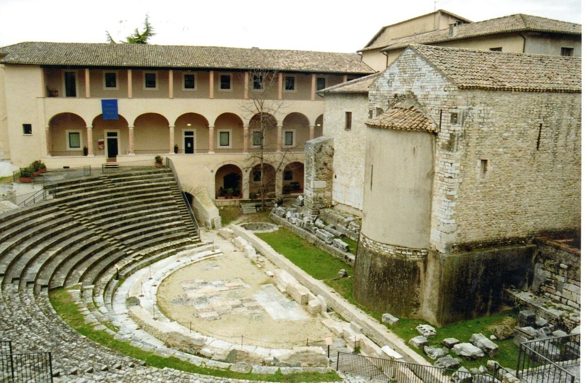
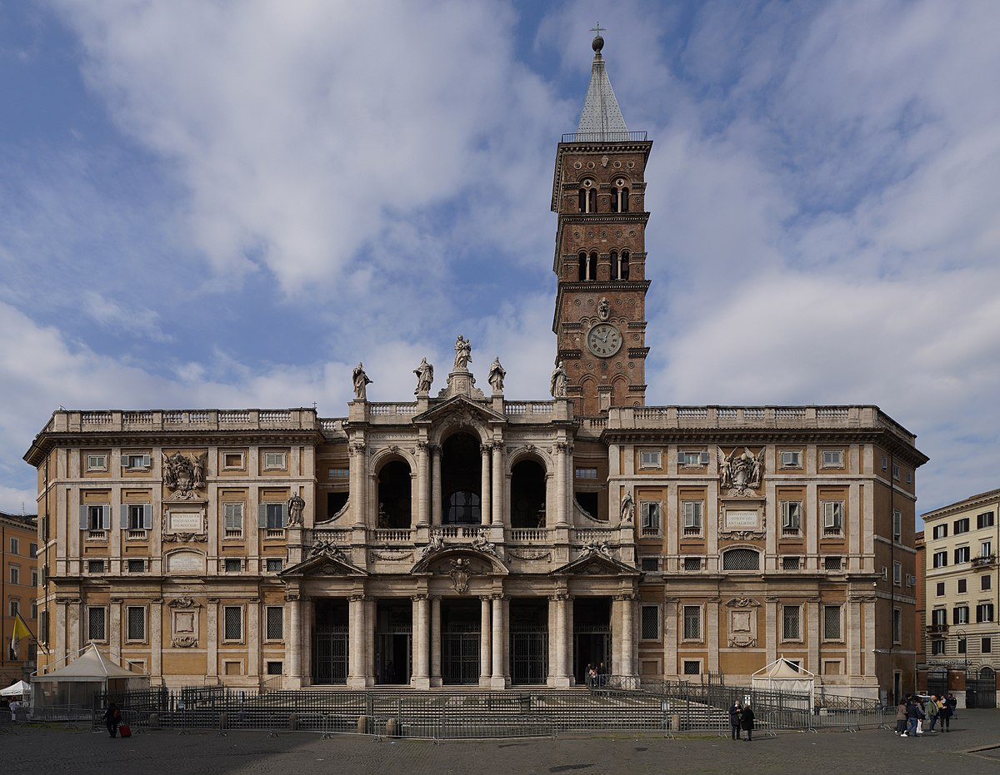
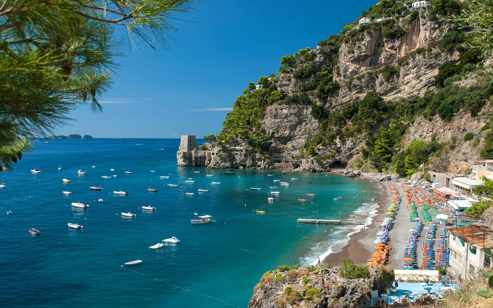

5 pratos típicos da Positano!
1. Pasta

Pasta: Estamos falando de Itália e por isso a Pasta não pode ficar fora da sua viagem pela
costa. Campania, a região de Amalfi, Positano, Minori e Maiori, tem uma grande tradição na produção de
massas feitas à mão
2. Scialatielli ai frutti di mare

Scialatielli com frutos do mar são um primeiro prato de peixe típico da culinária da
Campânia , em particular da Costa Amalfitana ; feito com um tipo de massa fresca , justamente o Scialatielli
: tiras mais curtas e largas que o espaguete cujo nome deriva da língua napolitana 'scialare' (aproveitar) e
'tiella' (panela); criado pelo chef Enrico Cosentino em 1978. Neste caso o risotto com molho de mariscos à
base de amêijoas ,mexilhões , camarões , alguns tomates cereja , alho e salsa ! Imagine-os cremosos ,
envolventes , com sabor e aroma intensos a peixe ; uma especialidade que se encontra nos melhores
restaurantes de Amalfi juntamente com Spaghetti com amêijoas , Calamarata e Linguine com scampi;
3. Spaghetti Alla Nerano

O spaghetti alla nerano é um prato italiano feito com abobrinhas. Conta-se que sua origem
foi por volta dos anos 50, na Costa Amalfitana, especificamente na Baía de Nerano. Daí veio o nome da massa.
Além das abobrinhas, esse prato leva também uma grande quantidade de queijo provolone e parmigiano, que dá
um gostinho bem peculiar.
4. Delizia al home

Delizia al limone, feita com limões, limoncello, ovos, açúcar, farinha, e que nos últimos
40 anos se tornou o doce mais conhecido da Costa.
5. Torta Caprese

Torta Caprese, feita de limão, amêndoas e chocolate, não foi criada na Costa, mas hoje é um
dos doces mais conhecidos por lá. E claro, os Gelatos de todos os sabores.
Pontos turísticos de Positano!
1. Sentiero Degli Dei

Ainda há uma grande confusão após o fim do bloqueio em relação aos caminhos, um
verdadeiro ponto forte da Costa Amalfitana. Todos os anos, de facto, são muitos os turistas e visitantes em
geral que experimentam um dos muitos trilhos fantásticos que caracterizam esta zona, única no mundo. Do
Caminho dos Deuses , que envolve os municípios de Agerola, Positano e Praiano, ao dos Limões , que abrange
os municípios de Maiori e Minori, a escolha sempre foi verdadeiramente ampla. Nestes dias estamos recebendo
muitos relatos e, mais do que tudo, pedidos de interessados que gostariam de tentar um desses caminhos,
mas infelizmente não têm informações precisas sobre o assunto.
2. Museo Archeologico Romano

É um museu dedicado principalmente à arte e civilização etrusca. Está alojado dentro do
Palazzo Vitelleschi, no centro histórico da cidade medieval. As coleções incluem, além de achados romanos e
etruscos bem documentados, reconstruções de túmulos e restauração de seus afrescos originais.
3. Chiesa di Santa Maria

A história da igreja de Santa Maria Assunta está ligada à do mosteiro beneditino de
Santa Maria, que segundo uma tradição não documentada foi construído por ocasião da chegada a Positano do
ícone bizantino da Madona, ainda venerado em nossa igreja . Mais provavelmente, porém, a abadia foi fundada
na segunda metade do século. X ; a primeira menção documental pode ser encontrada em um manuscrito do final
do século. XI, com a qual o duque Sergio de Sorrento concedeu ao abade Mansone do mosteiro de Santa Maria di
Positano a livre navegação nas águas de seu ducado.
4. Spiaggia del Fornillo

Spiaggia del Fornillo É a segunda praia mais importante de Positano, sempre que falamos
das praias localizadas no centro desta
bela cidade na Costa Amalfitana. Sua vantagem é que ele é algo mais "retirada" do coração de Positano, ao
contrário de sua irmã mais velha chamada 'Spiaggia Grande "ou Playa Grande, onde todos os caminhos levam
para a cidade, sempre a descer. As duas praias são separadas por apenas algumas centenas de metros, um
trecho em que se encontram o pequeno porto e terminal de ferry Positano, e uma boa caminhada entre as
árvores que fazem fronteira com os penhascos íngremes que os dividem. Eu recomendo fazer este passeio que
sai do terminal de ferry para a praia Fornillo, é de cerca de 10 minutos e tem uma vista maravilhosa onde
quer que olhe.
Escolha a melhor hospedagem para você e sua família!